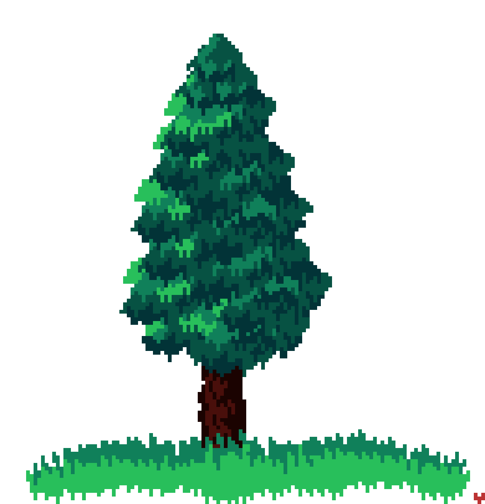

Nature

The phenomena of the physical world and life
- Geology and wildlife
- Natural environment
Nature Art
- Representation of objects in nature and nature as a whole
- From photorealism to abstraction
- Purpose beyond being an object of beauty
